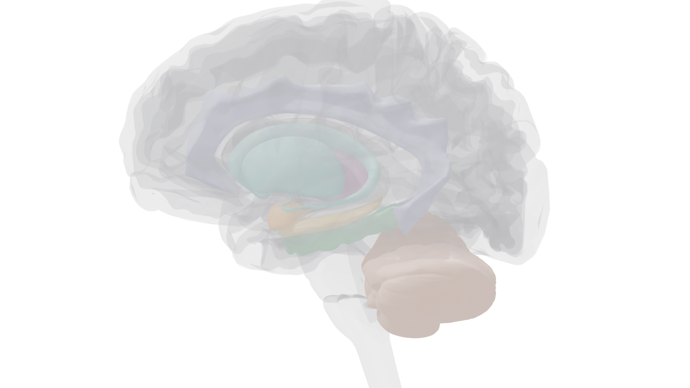
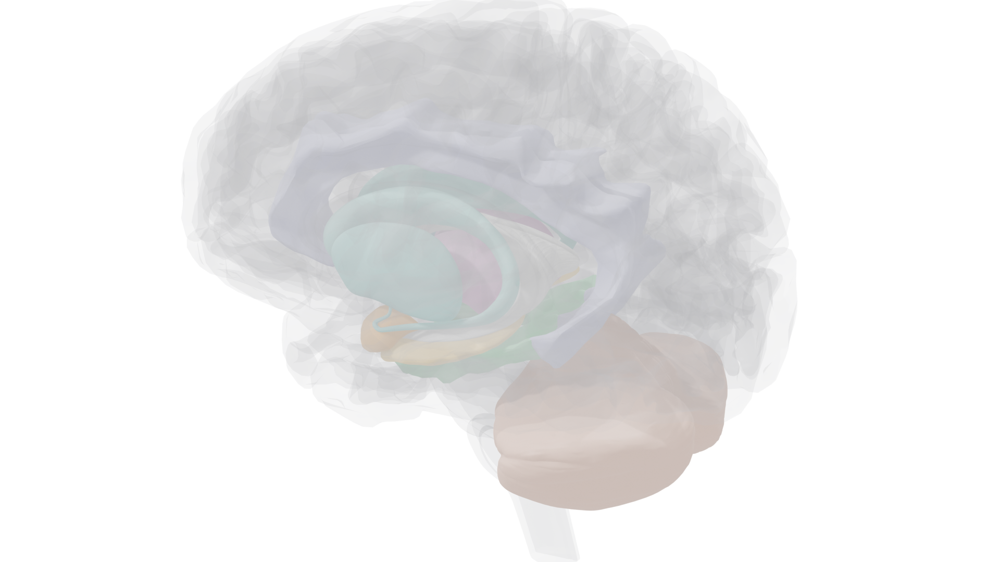
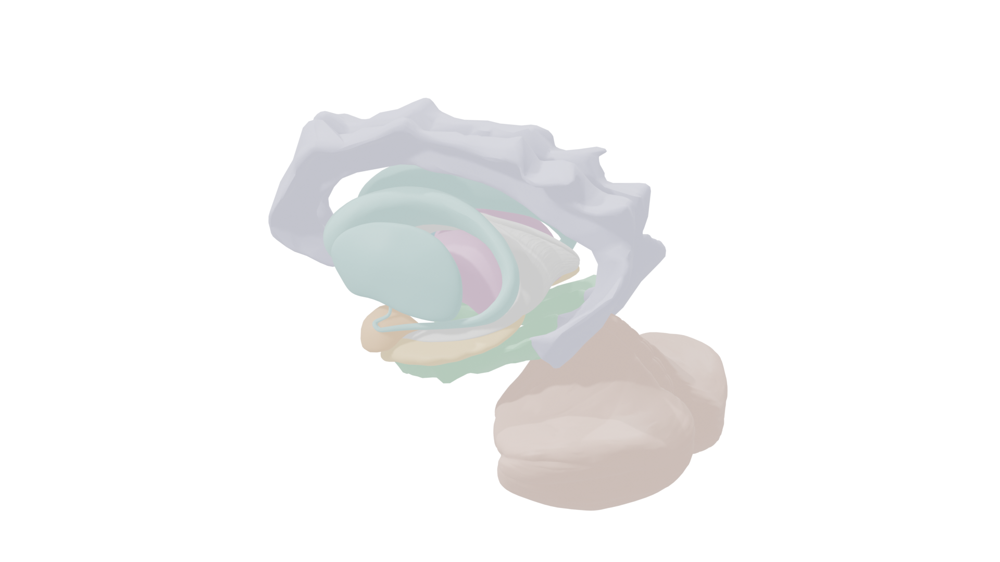
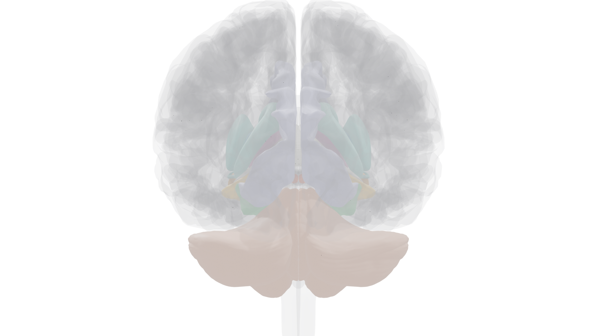
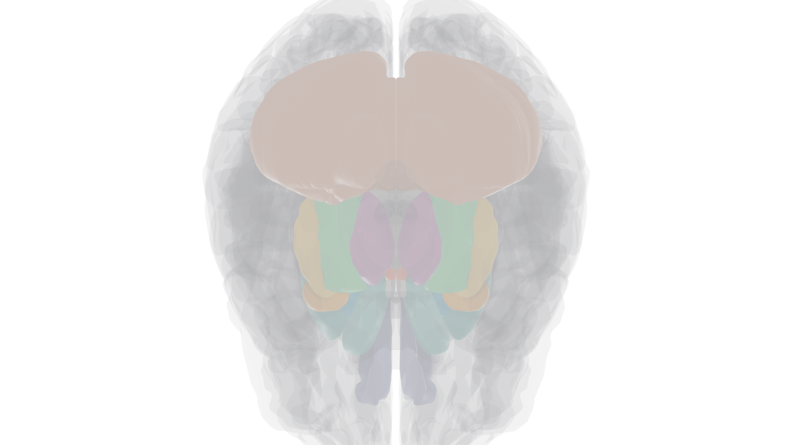

Brain structures involved in forming, storing, and retrieving memories. The memory circuit (hippocampus, mammillary bodies, thalamus, and cortex) is highlighted alongside the basal ganglia and cerebellum, which serve nondeclarative memory.

Patient H.M.'s surgery revealed that memory is not a single system. He lost the ability to form new declarative memories but could still learn new motor skills. This dissociation defines the two major categories:
Facts and events you can consciously recall and describe to others. Tested by asking "what" questions. Severely impaired in H.M.
Subtypes: Episodic (personal events tied to time and place) and Semantic (general knowledge without context of learning)
Hippocampus + Medial Temporal LobeSkills, habits, conditioned responses, and priming effects shown by performance, not conscious recall. Tested by "how" tasks. Intact in H.M.
Subtypes: Skill learning, Priming, Classical conditioning, Operant conditioning
Basal Ganglia + Cerebellum + CortexSurgery removed most of the hippocampus, amygdala, and surrounding cortex from both temporal lobes. Result: profound anterograde amnesia, unable to form new declarative memories. Short-term memory was normal (could repeat a digit list), but information vanished as soon as he was distracted. Old memories from before surgery were mostly intact (retrograde amnesia was limited). Crucially, he could learn new motor skills (mirror tracing) without any memory of having practiced, proving that declarative and nondeclarative memory are separate systems.
Damage to the dorsomedial thalamus and mammillary bodies, not the temporal lobe. Showed the same pattern as H.M.: normal short-term memory, intact nondeclarative memory, but severe anterograde amnesia for declarative information. This proved the hippocampus is part of a larger memory circuit that includes diencephalic structures.
Lost all episodic memory (no personal autobiographical recall) but retained semantic memory (general knowledge, conversation, chess). Could slowly acquire new semantic knowledge with spaced trials but never new episodic knowledge. The selective episodic loss was attributed to frontal and parietal cortex damage, not hippocampal damage alone.
Three interconnected brain regions are required to form new declarative memories. Damage to any one produces anterograde amnesia. But established memories survive this damage; they are stored elsewhere, most likely in the cerebral cortex.
Information flows through a circuit from sensory input to long-term cortical storage. The hippocampal system is needed to consolidate memories, but not to store them permanently.


Different types of nondeclarative memory rely on different brain regions. None require the hippocampus, which is why H.M. could still learn skills.
Classical conditioning of the eye-blink reflex illustrates how the cerebellum mediates associative learning. The CS and US converge in the cerebellum, where synaptic changes encode the learned association.
Three processes move information through these stages: Encoding (sensory → STM), Consolidation (STM → LTM, requires the hippocampus for declarative memories), and Retrieval (LTM → working memory). Failure at any stage means information is lost.
Memory storage requires physical changes in the brain, specifically changes at synapses. The best-studied mechanism is long-term potentiation (LTP), a long-lasting increase in synaptic strength first discovered in the hippocampus.
AMPA receptors: mediate normal synaptic transmission. During low-level activity, these are the only active glutamate receptors.
NMDA receptors: blocked by Mg2+ during normal activity. Only become active when strong AMPA-mediated depolarization ejects the Mg2+ plug and glutamate is present. This dual requirement (depolarization + ligand) makes them coincidence detectors.
When NMDA receptors open, Ca2+ floods in, triggering enzymes that: (1) move additional AMPA receptors to the synapse, (2) increase existing AMPA receptor conductance, (3) stimulate production of new AMPA receptors, and (4) cause retrograde signaling that increases presynaptic glutamate release. The synapse is strengthened on both sides.
Living in a complex environment with opportunities for learning produces measurable brain changes. Compared to animals in impoverished conditions, enriched-condition animals show:

